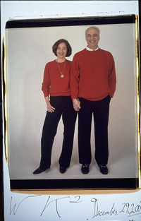

as Written, Recited & Amended by Harvey A. Silverglate. November 17, 2001.
Fond greetings and salutations to all assembled here this evening, especially to Wendy's parents, Miriam and Sam:
{kind=link}
We have gathered together this evening to witness an extraordinary event that is worthy of recordation in MIT's fabled Annals of Improbable Results - the marriage of our dear friends Wendy Kaminer and Woody Kaplan.
For Woody, entering into marriage - again - represents the conquest of hope over experience.
For Wendy, entering into marriage at this particular point in her life and her career represents the conquest of experience over ideology.
Sigmund Freud for a while had difficulty explaining how certain of his patients, suffering from what Freud called "neurosis," managed to overcome the seemingly enormous obstacles to their own happiness and fulfillment in life that, as so many of us know, neurotics face. Nothing in their psychoanalytic treatment could explain their sudden break-through, their sudden grasping of a new piece of life and experience, their sudden emergence into the light of a new day. Freud, perplexed at the sudden break-through by such patients, attributed it to what he termed the intervention of a "reality experience." Normally, the "reality experience" represented the entry into the life of Freud's patient of some other human being who had an extraordinary chemistry with the patient. Or, as Ronald Reagan might have described it, suddenly "it's morning in America."
Well, for Wendy and Woody, and for those of us who love them both so dearly, it is indeed morning in America. That these two idiosyncratic and intensely independent and strong-willed minds and souls managed to find each other is miracle enough. But, surely, the fact that they found the nerve to enter into marriage pushes the situation over the top. Marriage is challenging enough for any two people. But for the strong-willed, marriage is truly a wild ride. And we are all so honored that they chose us as witnesses to this union.
And it is a good thing, too, that it is morning for these two extraordinary and wonderful people, for we as citizens of the American nation are entering into difficult and dangerous times for liberty and civic decency. These are times that will require extraordinary resolve and vigilance on the part of all people who love liberty and all that liberty brings to life. Wendy has been, and Woody has been, each individually, a powerhouse in the fight for liberty - strong, resolute, intelligent, stubborn, creative, indefatigable. Yet their partnership has magnified the power and effectiveness of each, creating a marvelous synergy.
One has the sense, however, that the marriage of these two wonderful people will now raise the level of the partnership from merely a marvelous synergy to a veritable juggernaut. In times such as we have so recently, and tragically, entered, it is comforting to know that the team of Kaminer and Kaplan will henceforth move from the realm of the de facto into the realm of the de jure.
I am enormously pleased to have been asked by these two dear and beloved friends of mine -- and it is unusual, in my experience, to deem both partners in a couple to be friends, but that is surely the case here -- to join them together in the eyes of the law. I've never done it before. In order to gain the certification to conduct a single wedding between these two named people in this particular city and on this day alone -- yes, it will please you to know that we must complete this ceremony before 12 o'clock midnight, because, like Cinderella's coach, my one-day certificate expires then -- I have had to deal with more relatives and friends of former Senate President William Bulger that I had the pleasure of meeting during all the preceding years of my legal career. The so-called solemnization apparatus at both the State House and City Hall is an awesome collection of civil servants, each with his or her own small but essential part to play in issuing this certificate. [show certificate] But I gladly went through the process in order to be able to confer this mitzvah on my two friends, as well as to give the Commonwealth and, indeed, the Nation, the benefits that will flow to all of us from solidifying the bond between these two remarkable folks. (Of course, cynics have advised me that Wendy and Woody asked me to perform the marriage because they suspected that it was the only way to get me to come to a party! I will not dignify that accusation with a reply, except to observe that I did show up!)
So here we are at this historic event -- Sensitive man joins in marriage with high maintenance woman.
I will now perform the ceremony. I should point out that I have been instructed by Mr. Bulger's relatives and friends at the State House that there are no particular magic words for performing a marriage in Massachusetts. All one has to do is make certain that each party is entering into the union knowingly and voluntarily -- that is, with his or her eyes open -- and then to make it clear, by the end of the ceremony, that they are indeed married. Allow me to read from my official instructions:
- Quote: "As a general rule, there is no prescribed form of ceremony to solemnize a marriage. Although particular words are not essential to a ceremonial marriage, the words employed must be sufficient to evidence a present marriage contract. At a minimum, the parties must assent to a mutual agreement to take each other as husband and wife and the Justice of the Peace must assert to act in his/her official capacity in pronouncing the parties to be husband and wife. Milford v. Worcester, 7 Mass. 48, 54 (1810)." End quote.
So, let us proceed to the ceremony. I will ask the bride and the groom a set of questions. I hope and trust that they will be able to answer with a "yes" or "no," even though I should know better.
- WOODY,
- Have you shown up here today in order to wed Wendy, and do you know what you're doing?
- WENDY,
- Have you shown up here today to wed Woody, and do you know what you're doing?
- WOODY,
- Do you undertake, even promise, to listen to Wendy's opinions, and to appreciate them, even if you don't always agree with them? [Note: At the insistence of the bride, this undertaking was retroactively amended to substitute "advice" for "opinions", with the word "it" being substituted for the word "them."]
- WENDY,
- Do you undertake, even promise, to listen [patiently, perhaps even] respectfully, to Woody's spouting off on subjects concerning which you are convinced that you know far more than he does? [At the request of the bride, the words "patiently, perhaps even" were excised.]
- WENDY and WOODY,
- Do each of you undertake to enter into an agreement as to a Separation of Powers, so that each of you has some area in which you are sovereign and supreme in governing the household? For example, perhaps Wendy could make the small decisions -- where and how to live, what to do for entertainment, what kind of food to eat, what movies to see and concerts to hear, what places to visit, what causes to support, whom to have as friends -- you know, the small matters of daily life. While Woody can handle the big decisions -- what should the United States' foreign policy be in the Middle East? How should Medicare be reformed? What should we do about global warming? -- you know, the big things that really count. Do you so undertake?
- WENDY and WOODY,
- Do each of you take the other to be your lawfully wedded spouse, to have and to cherish?
I will now proceed to what I deem the Amendments governing your marriage contract. Do each of you undertake the following obligations:
The First Amendment.
Do each of you agree to refrain from seeking to impose an establishment of formal orthodoxies in the marital household, and instead to honor the free exercise of each partner's personal philosophy of life? And to honor each other's right peaceably to assemble, but not to dissemble, and to respect the other's right to petition for redress of grievances? To exercise prior restraint of self before imposing prior restraint on the other? To run roughshod over the other only when there is a compelling, even if unstated, interest in your doing so? Yea or nay?
The Second Amendment.
Do each of you undertake, when upset, to bare souls rather than bear arms? Yea or nay?
The Third Amendment.
Do you undertake not to quarter troops, nor, more importantly, unwanted friends and relatives, in your apartment, without the consent of the other? Yea or nay?
The Fourth Amendment.
Do you undertake to protect the security and privacy of the other, except perhaps when there is probable cause to do otherwise? Yea or nay?
The Fifth Amendment.
Do you agree to grant to each other due process before administering a devastating rebuke? Do you each undertake to learn from your mistakes made during the marriage, and not put yourself and the other, nor your relationship, twice in jeopardy for the same stupid reason, nor to deprive the other of dignity or advantage without at least first giving him or her due process? And do each of you agree to accord to your partner the privilege of not having to confess and thereby incriminate himself or herself in the face of a one-time error of judgment, no matter how dumb or ill-advised the error? Yea or nay?
The Sixth Amendment.
Do you each undertake that, when you have a gripe, you will immediately bring it to the attention of the other -- give him or her a speedy trial, in other words -- and inform the other of the nature of the accusation and allow the other an opportunity to defend, before you blow your stack? Yea or nay?
The Eighth Amendment.
Do each of you agree to refrain from the imposition of cruel and unusual punishments upon the other for the inevitable transgressions that will occur from time to time? Yea or nay?
The Ninth Amendment.
Do you agree that if I have failed to enumerate during this ceremony some right or obligation of marriage, this omission shall not be construed to deny or disparage other un-enumerated rights retained, and obligations assumed, by the other partner? Yea or nay?
The Tenth Amendment.
Do each of you undertake that after you have divided up, by agreement, the various chores and responsibilities for maintaining your joint lives, and after you have delegated to each partner in the marriage the powers necessary to carry out said chores and responsibilities, all chores not delegated and divided up between you shall be reserved to the People, including the concierge at the Ritz, the doorman, the parking garage attendant, the cleaning person, and other such people? Yea or nay?
Since you have answered all of my questions correctly, or at least adequately, I will now present you with two indispensable marital aides before I pronounce you to be married. First, here is, for each of you, a copy of The Declaration of Independence and the United States Constitution. Having made the decision to marry, you will doubtless be more interested in the latter rather than the former. Here you will find the provisions that provided the basis for many of the questions that I have just asked you. Keep it near you at all times, and do not let it find its way, intentionally or inadvertently, into the Ashcroft shredding machine from whence it will have difficulty emerging in recognizable and useful form.
Second, here is for each of you a supply of what I call "compassion" cards. These will help you when you get into an argument. I will now read you the text of the card, and what I recommend you do is hand the card to your spouse when he or she is exasperated with you and complaining to and about you, but when you have difficulty summoning up the requisite humility and compassion to apologize or pronounce an appropriate mea culpa. The card says:
- Your story has touched my heart.
Never before have I met anyone with as many troubles as you have.
Please accept this card as a token of my sincere sympathy.
It is now my distinct honor and pleasure, by authority of the powers vested in me by the Hon. Jane Swift, Acting Governor of the Commonwealth, facilitated by the army of public servants at the State House and in City Hall who processed my application for certification to solemnize your union, and before all of these friends assembled to witness this miraculous, wonderful, and long and eagerly anticipated but, still, astoundingly startling event, to pronounce you husband and wife. Mazel tov and congratulations! L'chaim! To life!
Find Elsa's Books


Please change your links and bookmarks to elsadorfman.com!
Elsa thanks her cybergodmother, photo.net, her longtime, most generous host at furfly.com, and her current web host Mike Sisk at TCP/IP Ranch, LLC.
Copyright 1970-2010 © Elsa Dorfman.
Inquiries for the use of Elsa's content are welcomed!
Please
read these guidelines.
Contact
Elsa Dorfman via email or send Website Feedback to her webmaster.